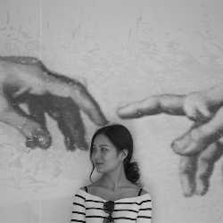

名字:
云朵和竹林
性别:女

介绍:
问题
答案
新建于:2016-05-25 01:27:52 PM，更新于2016-05-25 01:27:52 PM
Pre上一页
Next下一页
跳页:
正文: 蜂腰翘臀是关键。我喜欢包臀裙，凸显身材优势，气质知性。
但是由于腰臀比太大，很多时候我不得不选择一些让臀部看起来不那么突出的包臀裙。
条纹的包臀裙可以在视觉上让臀部看起来扁平一点，搭配黑色高领短上衣，显得整个人瘦长瘦长。高领显胸。
我有些恨拍照的人没给我把镜头往后移再一点。
黑色过膝包臀裙搭配条纹上衣。裙子后面开衩到小腿上，不会妨碍走动，微微小性感
小旗袍一边开衩。腰部不要收太紧，腰间轻微的褶皱才是旗袍的语言。
正常情况下穿紧身裤是这个样子的
为
为了不让臀部曲线看起来太brutal太骚气，日常穿蓬蓬裙的情况比较多，手机里包臀裙的照片其实屈指可数
附上男朋友眼中的我。。。我只想问为什么？？？！！！
Pre上一页
Next下一页
跳页: